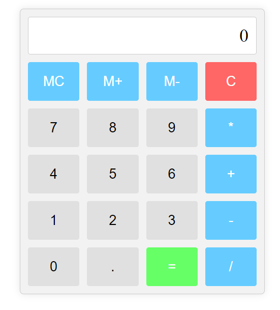

期中報告 <<
Previous Next >> 期末報告
計算機

程式碼:
<!DOCTYPE html>
<html lang="en">
<head>
<meta charset="UTF-8">
<meta name="viewport" content="width=device-width, initial-scale=1.0">
<title>Brython Calculator</title>
<script type="text/javascript" src="https://cdn.jsdelivr.net/npm/brython@3.9.5/brython.min.js"></script>
<style>
.calculator {
width: 300px;
background-color: #f2f2f2;
border: 1px solid #ccc;
border-radius: 5px;
padding: 10px;
margin: 20px auto;
box-shadow: 0px 0px 10px rgba(0, 0, 0, 0.1);
}
.calculator .output {
font-size: 24px;
text-align: right;
padding: 10px;
margin-bottom: 10px;
background-color: white;
border: 1px solid #ccc;
border-radius: 3px;
}
.calculator .buttons {
display: grid;
grid-template-columns: repeat(4, 1fr);
gap: 10px;
}
.calculator button {
font-size: 18px;
padding: 15px;
border: none;
border-radius: 3px;
cursor: pointer;
background-color: #e0e0e0;
transition: background-color 0.3s;
}
.calculator button:hover {
background-color: #ccc;
}
.calculator .function {
background-color: #66ccff;
color: white;
}
.calculator .function:hover {
background-color: #33bbff;
}
.calculator .equal {
background-color: #66ff66;
color: white;
}
.calculator .equal:hover {
background-color: #33ff33;
}
.calculator .clear {
background-color: #ff6666;
color: white;
}
.calculator .clear:hover {
background-color: #ff3333;
}
</style>
</head>
<body onload="brython()">
<div class="calculator">
<div class="output" id="output">0</div>
<div class="buttons">
<button class="function" onclick="memory_clear()">MC</button>
<button class="function" onclick="memory_add()">M+</button>
<button class="function" onclick="memory_subtract()">M-</button>
<button class="clear" onclick="clear_output()">C</button>
<button onclick="append_to_output('7')">7</button>
<button onclick="append_to_output('8')">8</button>
<button onclick="append_to_output('9')">9</button>
<button class="function" onclick="append_to_output('*')">*</button>
<button onclick="append_to_output('4')">4</button>
<button onclick="append_to_output('5')">5</button>
<button onclick="append_to_output('6')">6</button>
<button class="function" onclick="append_to_output('+')">+</button>
<button onclick="append_to_output('1')">1</button>
<button onclick="append_to_output('2')">2</button>
<button onclick="append_to_output('3')">3</button>
<button class="function" onclick="append_to_output('-')">-</button>
<button onclick="append_to_output('0')">0</button>
<button onclick="append_to_output('.')">.</button>
<button class="equal" onclick="calculate_result()">=</button>
<button class="function" onclick="append_to_output('/')">/</button>
</div>
</div>
<script type="text/python">
from browser import document, window
output = document['output']
memory = 0
current_operation = ''
last_value = ''
def append_to_output(value):
if output.text == '0' or output.text == "Error":
output.text = value
else:
output.text += value
def clear_output():
global current_operation, last_value
output.text = '0'
current_operation = ''
last_value = ''
def memory_clear():
global memory
memory = 0
def memory_add():
global memory
memory += float(output.text)
clear_output()
def memory_subtract():
global memory
memory -= float(output.text)
clear_output()
def calculate_result():
global current_operation, last_value
try:
result = eval(output.text)
output.text = str(result)
last_value = output.text
current_operation = ''
except Exception as e:
output.text = "Error"
last_value = ''
current_operation = ''
# Export functions to be available from JavaScript
window.append_to_output = append_to_output
window.clear_output = clear_output
window.memory_clear = memory_clear
window.memory_add = memory_add
window.memory_subtract = memory_subtract
window.calculate_result = calculate_result
</script>
</body>
</html>
期中報告 <<
Previous Next >> 期末報告